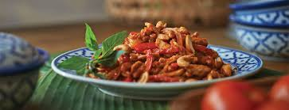

Thai Chilijam

Sweet & Sour Thai dish seasoned with chili and tamarind paste
Ingredients:
- Noodles
- Chicken thighs or steak cut up in pieces, shrimps
- Vegetables eg green beans, paprika, broccoli, carrot
- Red chili paste
- Tamarind paste
- Palm or cane sugar
- lemons, fish sauce, cashew nuts, green onion
Method:
Marinate the protein source
Mix a loosened egg with some maizena, fish sauce, soy sauce, sambal, fresh ginger, chilis, garlic etc
Prepare the Chilijam
In hot wok, add some oil, fry 1 spoon of chili paste. Add 1 spoon of tamarind paste and finally some sugar. Keep frying/stirring until ingredients resemble a jam. Remove from wok and put aside, clean wok.
Then:
- Prepare noodles according to the package, rinse off in cold water.
- If using green beans, blanch and rinse off in cold water.
- Heat new oil in the wok and stirfry the chicken or steak in small portions.
- Stirfry all the vegetables, add the protein, add the chili jam, taste and season with fish sauce, lemon and palm/cane sugar.
- Add noodles, warm everything through and serve with cashews and green onions.